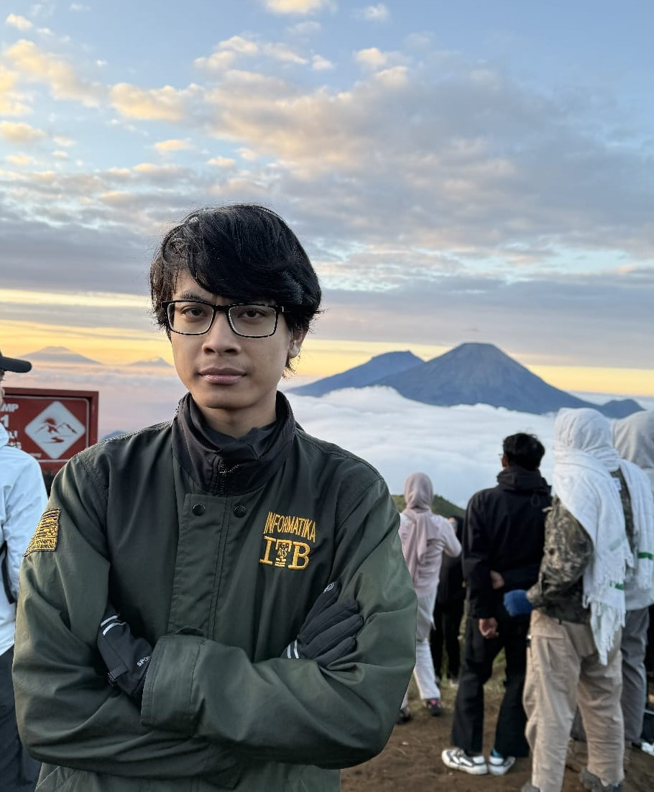

Hi! I'm
Fajar Kurniawan
Fajar Kurniawan

Mahasiswa Institut Teknologi Bandung. Aku mengambil jurusan Teknik Informatika dan sedang menjalani semester lima.
Minatku ada di software engineering dan cybersecurity.
Bagian dari Himpunan Mahasiswa Informatika ITB.
2020 - 2023
2023 - Sekarang